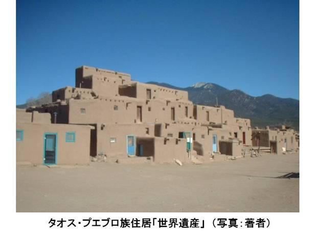
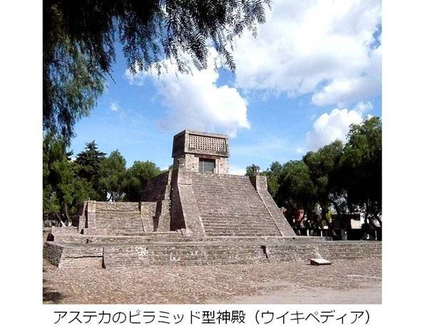
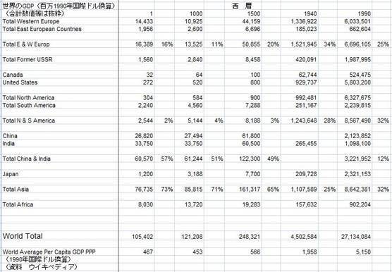

| ① すでに住んでいた人たち タイユーの走るアメリカ「ヒストリー編」 | |
| 渡辺タイユー | |
| Taiyu Watanabe (2013) | |
はじめに
若干 21才でアメリカに渡って来てから 40年が過ぎました。 2001年 9月 11日にニューヨークで起きた同時多発テロの影響で、それまでに自分が築いてきたわずかな生活の基盤であったツアービジネスを失い、生活のためにタクシーの運転手をしていたある日のことです。同僚の運転手が長距離トラッカーに転職をするとのことで別れの挨拶を交わしていた際、ふと " 自分も長距離トラッカーになればアメリカ中を観光しながらお金を稼げるのでは " と想いました。はなはだ虫の良い考えでしたが、週末1日を５回ほどついやして大型トラックの免許を取得し、トラッカーとして 走り始めたのが 8年ほど前、以来ＯＴＲ (Over The Road)ドライバーと呼ばれる長距離トラッカーとして、アメリカせましと走り回っています。おかげで Coast to Coast, Border to Border（西海岸から東海岸、カナダとの国境からメキシコとの国境）と呼ばれるアメリカ中を網羅するフリーウェイや国道を駆使しながら荷物を運び、西のロッキーから東のアパラチア、北のグレートレークから南のディープサウス、北西部のカスケードマウンテンから南西部のモハブやソノラの大砂漠と走りまわり、アメリカ 50州の中でトラックで走ったことのないのがアラスカ、ハワイ、北東部3州だけになりました。そして走りながら景色を楽しむだけではなく、アメリカ人なら一度は訪れてみたいと願うホワイトハウスを筆頭に、世界でも有名なスミソニアン博物館・国立公園・史跡遺跡そして名所の数々を訪れ楽しむこともできましたし、アメリカにある航空博物館めぐりに至っては、ゆうに30ヶ所を超え、それも3度目4度目と言うところが何ヶ所もあります。大空を自由に飛び回るパイロットに憧れてアメリカに渡ってきた筆者にとって飽くことのないアメリカ中の航空博物館めぐりは、まさに夢のバケーションの連日です。
ＯＴＲトラッカーには、金銭には替えられない役得がもう一つあります。それは、「自由な時間」が豊富にあることです。アメリカのＯＴＲトラッカーは、毎日10時間ほど、距離にして600～1000キロほど走るのですが、もちろん運転中に居眠りはできませんし、道を間違えないようにしなければいけませんし、指定された配達時間までに到着できるようにプランニングをして走らなければいけませんから、自由な時間と言っても自分勝手な行動ができる時間ということではありません。自由な時間というのは、この走っている 10時間ほどを運転に支障がないかぎり、自由に使えるということです。筆者は毎日の日課として、衛星経由で放送されているラジオを 4-5時間聞きます。ＢＢＣ、ＣＮＮ、ＦＯＸ、ＣＮＢＣといった世界の政治経済を中心としたニュースや、そうした毎日のニュースを討論するトークショー番組を聞きながら走ります。そして残りの数時間はポッドキャスト (podcast)です。近年の目覚ましい IT (Information Technology)の発展のおかげで、ありとあらゆる分野の話題がポッドキャストとしてインターネット上で用意されていて、ＭＰ3フォーマットでいとも簡単にダウンロードして聞くことができます。
筆者は北海道生まれで、せっかく入学できた高校をわずか1年ほどで中退してしまいましたから、中学卒業程度の英語力と学力しか持ち合わせていせん。9.11までは幸運にも、その程度の英語力と知識で適度の収入を得る機会に恵まれていましたから、無学であることにそれほどの不自由を感じることはありませんでした。ところがタクシーの運転手になり、毎日ラジオから流れてくるニュースやトークショーを聞くにつれ、アメリカという国の姿が少しずつ少しずつ変わって見え始めました。それは9.11以来、アメリカ が変わったのではなく自分の知識がなかったことと、生活が変わったゆえに今まで見たり触れたりすることのなかったアメリカの姿に気付き始めたということなのです。そうした事に気付くと同時に、 21 世紀をリードする世界で唯一の超大国スーパーパワーとしてのアメリカの行動や思想がどこから来ているのだろう、どこで造られたのだろうという疑問が大きく膨らんできました。
筆者は、アメリカでパイロットになるためにフライトスクールで勉強はしましたが、アメリカの高校を出ていませんから、アメリカ人が当然知っているべきアメリカの歴史の知識がほとんどありませんでしたし、日常交わすアメリカ人の友人との会話でも、よほどのことがない限りアメリカ史を語り合う機会などもめったにありませんでしたから、その疑問の数はどんどん増えて行くのでした。その膨らむ大きな疑問の答えを知る機会を与えてくれたのが、 8年ほど前から始めたＯＴＲ(over the road)と呼ばれる長距離トラッカーの仕事です。ＯＴＲトラッカーは、毎日楽しい観光ができるだけでなく、インターネットでダウンロードできる数々の大学の歴史講座や歴史専門家のポッドキャストを聞く時間に恵まれ、更にそのポッドキャストで聞いた数々の史跡を、仕事の合間に実際に訪れることができるのです。この仕事のおかげで、次々に湧き出るアメリカンヒストリーへの疑問の数々が、春の雪解けのように少しずつ解かれ始めました。そして、ポッドキャストで聞いた歴史的な発祥の地、ゆかりの地を実際に訪れてみると、それまでの疑問が解かれていくだけではなく、言葉では言いあらわすことのできない感動を全身で覚えるのでした。たとえば、初めてフィラデルフィアに行った時に訪れた「独立記念館」で、アメリカ憲法立案のために建国の父たちが熱い議論を交わしたメインホールに足を一歩踏み入れた瞬間に覚えた身を震わす大きな感動は、 40年も前に、やっとの思いでたどりついた壮大な渓谷グランドキャニオンの展望台、マザーポイントで受けた感動を勝るものでした。そしてその後にも、アメリカ中の各所で同様の体験することができました。
9.11までの 25年間は、グランドキャニオンを中心にラスベガス近郊のマクロの世界、大自然のまっただ中で、その巨大なエネルギーをお客様と一緒に堪能することが筆者の仕事でした。しかし今は人間がつくる歴史、そのミクロの世界にも地球を震わすほどの、マクロなエネルギーが存在していることを感じてなりません。無知無能の筆者ですが、これから書こうとするアメリカンヒストリーを通して、 8年間で150万キロをも走りながら、体で感じた人間のつくり出す巨大なエネルギーのいくばくかを、文字で伝えることができればと願いつつ、筆をとります。
サムライ・トラッカー
タイユー
目次
はじめに
第 2 章 Indigenous peoples of the Americas
新世界アメリカ大陸にすでに住んでいた人たち
北アメリカでのインディアン博物館
第 4 章 コロンバス以前の南アメリカ
メソアメリカ文明
第 5 章 こんな見方も
インディジニアス・ピープルの人口と GDP は？
次号は「アメリカン・ドリームのルーツ」
著者紹介
リファレンス
第 1章 歴史を考えるときに
不二一如
歴史を考えるときに、筆者がつくづく思うことが幾つかあります。たとえば「アメリカの始まりはいつ？」との一見 1776年 7月 4日と誰もが即答することでも、その背景を探っていくと、そこにはダイナミックな現象が底知れずにあることです。そしてその生きた一つ一つのミクロな現象が幾つも重なり合い連鎖反応を起こし、結果として歴史的なマクロな結果を生み出してきたのでした。ですから、常にミクロ的な見方とマクロ的な見方をしなければいけないとつくづく思わされます。一見対立することのように思えるミクロとマクロですが、これを常に相対的に見て考えていくと歴史が良くわかって来るように思えてなりません。それはあたかもアインシュタインが、一方が止まった状態で観測した理論を「特殊 (special)」相対性理論と呼び、観測者も観測対象物も両方が動いている状態の現象を「一般 (general)」相対性理論と呼んでいます。つまり、ミクロ的でもマクロ的でも一方からだけの見かたは特殊な条件であって、ミクロとマクロの両方から見て初めて何にでも適用できる通常の理論、一般論であると言ったようにです。
少し表現を変えてみますと、世の中にはプラスがあれば相反するマイナスがあり、右に対して左があり、上に対して下があり、男に対して女がありというように、一つの事には常に相反するもがあるわけですから、一方的にプラスだけを見るのではなく相反するマイナスも同時見なければいけない、相対する二つがあって一つであるとアイシュタインの相対性理論は言っているのではないでしょうか。それはちょうどヒンドゥー哲学で「梵我一如」《梵（ブラフマン：宇宙を支配する原理）と我（アートマン：個人を支配する原理 ）》 あるいは「不二一如 (not two but one)」と言っていることと同じ事ではないかと思います。
歴史と科学
科学は現象の因果関係を解き証明するものです。結果が起きるにはかならず原因があり、その原因をとことん追求していくのですが。なぜ原因をとことん追及するかとう言うと、その原因が分かりそれと同じ原因をつくってやることによって、同じ結果を起こすことができるからです。
アインシュタインは「光と時間は一方向に進み、その現象が起きる順番も変わることはない」と言っています。その時間には「過去」「現在」「未来」の３つに分けられますが、昨日の未来であった今日は、昨日に起きたことの結果です。ですから、明日をどのような結果にしたいかは今日起こすことの原因で決まってくると言うことです。ですから科学者は、その現象の原因を徹底して解明し、明日には同じ結果が起きるような原因を今日造ることに毎日励むのです。たとえば、近年の多くの高齢者を死に追いやる病気に癌があります。その癌をなくすための直接的な研究は、癌がなぜ起きるのかの原因を知ることです。原因を知ることができれば、その原因をどうすれば良いかを考えることができます。近年では、癌が起きる原因を突き止めるどころか、癌が起きない現象をも突き止められ、その癌が起きない現象をつくりだす研究も盛んに行われています。これは科学の基本理論になることである原因が同じであれば同じ結果が生まれことを証明することができるとの考え方があるからで、それが明日をつくるということだと思います。
科学と仏教
科学と同様の考え方で、人間が生きる上で明日の喜びをつくる方法として 2500年もまえに説いたのが、仏教の創始者「釈迦」ですが近年の科学者の理論と同じ事を言っています。仏教用語で「四諦説」と呼ばれるのがそれにあたります。この世の苦の原因を突き止め、それを取り去り、明日の喜びとなることを毎日行え（苦集滅道）と悟り説いたのでした。この原因（縁）があって結果（起）があると言う因果関係を、仏教では「縁起」と呼ばれています。
歴史を考えると言うことは過去を考えること、すなわちある時点で起きた現象を見ながら、その現象が何ゆえに起きたかの原因を考えるということです。そして過去の原因がわかって来ると明日の世界をどうやって築き上げたら良いかを考える、大きな手掛かりになるということではないでしょうか。それも相対的に。
ダーウィンの「進化論」
いま一つ歴史を考えるときに重ねて考えると、なるほどと納得させてくれる論があります。それはダーウィンの「進化論」です。近年のアメリカで、この進化論が国を挙げて議論されるのですが、それはまたその時が来たときにと言うことで、今は簡単に進化論とは、生物は外的要因の変化に対応して「生き延びる (survival)」ために自ら進化 (evolution)していくが、どの進化（突然変異）が残るかは自然の環境が決める (natural selection)と言うことと、この進化論は生物だけではなく社会思想においてもあてはまる、くらいの記述で先に進みたいと思います。
第 2章 Indigenous peoples of the Americas
新世界アメリカ大陸にすでに住んでいた人たち
1492年にコロンバスはインドに向かって大西洋を西へ西へと航海しました。そしてその後に呼ばれる新大陸にたどりつくのですが、本人はインドに到達したと思っていましたから、そこに先住していた人たち（ Indigenous People）をインディアン（インド人）と呼びました。その後、スペインやポルトガルが南アメリカを支配し始め、そして 17世紀に入ってイギリスが北アメリカにコロニーを開拓し始めてと一般的に語られます。歴史書によっては南アメリカにすでにあったインカ帝国とかアステカ帝国とかを、あるいは、イギリスのコロニー時代には開拓者とインディアンの争い事が起きながらもと、簡単に紹介をしているものもありますが、近年のアメリカ生活のなかでは、インディアンの人たちの事が話題になることはめったにありません。それは過去のことであり、特に近年のヨーロッパ人の北アメリカ移住と、それがもたらせた科学技術の発展により、世界でもまれにみる恵まれた生活様式のアメリカの中で、インディアンの人たちの生活が目立った支障もなく溶けこんでいるからではないでしょうか。
筆者の 40年のアメリカ生活のなかで、黒人の差別問題を考えさせられることは日常茶飯事ですが、インディアンの人たちの生活に関しては人口が少ない（約 3百万人 562部族）こともありますが、多くの人たちが自分たちの、インディアンのためにアメリカ政府との協定で保護されている自治区（ nation, reservation＊居留区ではありません）に住んでいて、めったなことでは人種問題も発生することがないですから、普段の会話に上がることがあまりないのだと思います。ただ筆者の場合は、 20年以上も全米で最高の大自然が密集しているウエストのゴールデンサークルと呼ばれる一帯の景勝地であるモニュメント・バレーやグランドキャニオンを案内することが仕事でしたから、こういった地域に住んでいる現在アメリカインディアン３大部族であるナバホ族の人たちと触れ合う機会が大変に多かったですし、ＯＴＲトラッカーになってからも、インデアンカルチャーを目にするアリゾナ州やニューメキシコナ州を走ることが頻繁にありますら、ナバホ、ホピ、ユート、プエブロ族等の人たちと触れ合うことが大変に多くあった生活だと思います。こうした経験のなかから知りえた知識をもとにしながら、コロンバス以前の新大陸の姿を多少ながら紹介したいと思います。
クローヴィス尖頭器 13,000年前
数万年ほど前から、旧人類のネアンデルタール人に変わって現生人類ホモサピエンスがアフリカで発展し、ヨーロッパからアジアへと生活の場が広まっていきました。そしてアジアのモンゴロイドの黄色人種系の人々が、１１万年ほど前にはじまり 1万１千年ほどの間続いた氷河期で海面の水位が下がっていた時代に、ベーリング海からアラスカを経由して、徒歩あるいはカヌーでアメリカ大陸に渡ってきたと考えられています。
1908年、ニューメキシコ州の小さな町フォルサム (Folsom)で、古代バイソン（日本ではマンモスと考えられています）の骨が発見されました。その後に考古学者が学術調査をしてみると、骨と一緒に矢じり型の石器が見つかるのですが、それは明らかに、人間がその古代バイソンを射止めるために使用した石器と考えられ、近辺に人類が生息していたことが明らかになりました。その後さらに近郊の町クローヴィス (Clovis)で当時の人たちの人骨が発見され、クローヴィス人（大きくはパレオ・インディアン Paleo-Indianに属する）となづけられ、同型の矢じりをクローヴィス尖頭器と呼ぶようになりました。調査の結果このクローヴィス尖頭器は約 13,500-13,000年前のものであることがわかり、アメリカインディアンの新大陸での生活の始まりはこのころからであろうと考えられていました。しかし、近年では他の考古学的発見やＤＮＡの研究から、さらに数千年ほどさかのぼるのではないか、そしてこのクローヴィス尖頭器はアメリカインディアンが世界に先駆けてつくり始めたのではないかとも言われています。
ネアンデルタール人も？
カリフォルニア州南端のサンディエゴの町から北に向かって、筆者が住んでいるネバダ州ラスベガスを経由し、ユタ州ソルトレークを通過してモンタナ州のカナダの国境沿いまで、アメリカを南北に縦断する全長 2300キロにも及ぶ、フリーウィの I-15線が走っています。この I-15線でサンディエゴから北に向かって、ロスアンゼルス郊外サンバーナディノの急坂を登りきるとバーストーの町にさしかかります。そしてバーストーを通り抜けると間もなく、フリーウエィ脇に小さな「 Early Man Site」のサインが 198番出口のサインと一緒に表示されています。出口を降りて、わずか 3-5キロほどの所に考古学発掘現場があるのですが、その近辺に昔銀の採掘が盛んだったキャリコがあることから、キャリコ・アーリー・マン・サイトと呼ばれています。一帯は内務省の土地管理 局 ( Bureau of Land Management) の管理下になっていますが、この発掘現場で、人類の始まりと言われるゆうに数百万年前の人骨を発見研究した有名な考古学者のルイス・リーキー ( Louis Leakey) が、 1963年 ころから長い間発掘研究をしていました。地層表面で １ 万年前後の石器が大量に発見されるのですが、掘り下げた地下にはゆうに 10万年前の地層があり、そこからも石器が採掘されています。もしかりにその石器が 10万年前に作られたものであれば、ヨーロッパのネアンデルタール人がアメリカ大陸までも渡ってきていたことになる可能性を秘めていますから、今後のさらなる発掘研究を期待したいものです。
第３章 コロンバスのころの北アメリカインディアン
氷河期が終わりに近づき氷が解け始めると、それまで陸続きに徒歩あるいは小型のカヌーで行きすることが可能だったアジアとアメリカ大陸を結ぶ道が閉ざされ、渡ってきたモンゴロイド系先住民族はアメリカ大陸で孤立し、独自の文明をつくりだすことになりました。
その生活の範囲は、北は北極近辺から南は南極近辺までもと広大な地域に渡っていますから、その地域文明を比べてみると違いがあり、特に南アメリカと北アメリカではかなりの文明の差が見られます。
南アメリカでは、起源前 1000年ころから発展してくるメキシコを中心としたメソアメリカ文化、アンデス山脈のふもとペルーを中心として栄えたアンデス文明が大きく世界的に知られています。遺跡やそれらを学術研究すると、南アメリカでは金銀を鋳造したり、ピラミッドにも匹敵する建築技術をも知っていた様子が幾つかの遺跡に見られますが、そうした知識をどこから得ることができたのか、また、どのような宗教・哲学・生活習慣を持っていたのかは、まだまだ未知なことがほとんどです。
北アメリカでは青銅器文化以前の生活様式である狩猟と農耕を中心とした、石器・土器文明が 15世紀のヨーロッパ人との接触まで続いていました。そして文明としては、フォーコーナーズを中心としたアナサジ族やプエブロ族、セント・ルイスを中心としたカホキア・マウンドなども取り上げられます。しかし、北アメリカ先住民族文化は、わずかながらの文字を持っていた形跡も見られますが、それを使って世代を超えて継承したり発展させたりした様子がほとんど見られません。
ヨーロッパ人と接触するようになると、スペイン人によって滅ぼされてしまったり、ヨーロッパ人が持ってきた天然痘、インフルエンザ、ペスト、肺ペスト等の疫病で、短期間に人口の激減をもたらしています。
次の 2枚の写真は、 16‐ 1７世紀の南北アメリカ大陸の先住部族の人たちのスケッチです。こうして北と南にわけてみると、両方ともモンゴロイド系ですから顔形は似ていますが、髪型といいますか頭の装飾を見てみますと、多少の違いがあることに気づかれると思います。北の部族は衣類をまとい、髪型は何かの装飾品を使って人工的に整っています。南の方は、多少のまとっている衣類も簡素で、半分ほどの人は髪の毛があるがままの状態です。それがどのような意味を持つのか、筆者には多少の違いがみられるという以外に想像もつきませんが、読者の方はどう思われるでしょう。
北アメリカでのインディアン博物館
ＯＴＲトラッカーになって間もなくのころですが、インディアナ州のインディアナポリスに、日本から来る友人のビジネス支援に出かけて行った折のことですが、友人到着まで半日ほど時間があったので観光雑誌で紹介されていた「 Museum of American Indian」を訪れることにしました。博物館の中に入り見学し始めてすぐに気がついたのですが、紹介されているインディアンは自分がそれまでツアービジネスで馴染んでいた、ウエストのインディアン部族のことばかりでした。数年たってアメリカの首都ワシントンＤＣを訪れた時に、スミソニアン博物館の一つで、「 Museum of the American Indian」を訪れた時もやはりウエストのインディアン部族の紹介が多いことに気づきました。そしてさらに、紹介されている部族のほとんどが、当然ながらコロンバス以前から住んでいて現在も独自の言語や風習を守りながら、 21世紀のアメリカが誇る世界最新の生活環境をしっかりと受け入れていることでした。このコロンバス以降消滅してしまった南アメリカ先住民族の運命と、ワシントンＤＣを訪れる世界の訪問者に、現在も脈々と生きている個々の文化をしっかりと主張できる北アメリカ先住民族の人たちの相対する運命の違いは、マクロ的にアメリカが主張する人間のあるべき姿を示す、一つの意義あるミクロの姿ではないかと大いに考えさせられたものです。

フォーコーナーズ (Four Corners)
ウエストには、フォーコーナーズと呼ばれるアメリカでただ一か所、アリゾナ州・ユタ州・コロラド州・ニューメキシコ州の 4州境界線が交差するところがあり、そしてそこを中心に、ゴールデンサークルと呼ばれる、世界有数の景勝地が密集している地帯があります。アメリカの約 60カ所ほど指定されている国立公園のなかでも、素晴らしい景観美で世界に知られる、グランドキャニオン、ザイオン・キャニオン、ブライス・キャニオン、インディアナ・ジョーンズで知られるアーチーズ、すぐ隣のキャニオンランド、キャピタルリーフ、そしてジョン・ウエインの西部劇映画でおなじみのモニュメント・バレーやディズニー映画でおなじみのカーズの舞台キャニオン・デ・シェー。さらにはロッキーを東に超へて広がるビッグ・スカイの中腹にはメサバーディー国立公園と、あげればきりがありません。そしてこの世界最大と言っても過言ではないほどに知られた、アメリカ最高の景勝地のいたるところで見られる居住跡が、消え去った文明の人々として知られる「アナサジ (Anasazi)・インデアン」の遺跡です。
プエブロ族 (Pueblo Indian)
アナサジとは、ナバホ語で「消え去った人々」あるいは「大昔の人々」という意味で、現代のナバホ族の自治区 (Nationまたは Reservation＊居留区ではありません )と大きく重複する一帯に住んでいたインディアン部族につけられた呼び名です。住んでいた形跡の古くは、紀元前 7000年ほど前にも及び、時代によって住む場所を広範囲に移動し、その場所の違いからさらに呼び名がつけられていますが、石造りの集合住居形式は現代でも多くのインディアン部族に受け継がれています。そのアパートを思わせる石造り集合住宅を見たスペイン人はそこに住む人たちを「プエブロ Pueblo（スペイン語で town町の意）」と呼び始め、アナサジ族も大きくはプエブロ族に属し、スペイン人が見たホピ族、タコマ族、タオス族などは、アナサジ族の血を継承しているともいわれています。この古代プエブロ・インデアンのアナサジ族の遺跡の大きなものがこのフォーコーナーズ一帯各地に見られます。崖のくぼみに作られたクリフ・ドエリング (Cliff Dwelling)ではメサバーディ国立公園の「 Cliff Palace」、キャニオンデシェーの「 White House」、ナバホモニュメントの「 Betatakin 」、平地では世界遺産にも登録されているチャコーカルチャーが知られています。また現代のプエブロ族のなかでも、タオス族の住居が世界遺産に登録されていて、多くの訪問者でにぎわっています。


カホキア墳丘群 (Cahokia Mounds)* カホキア族ではありません
アメリカを東西に 2分するかのごとく流れているミシシッピー川、そのまた中央に当たるところが西へのゲートウエィとなるミズーリ州セント・ルイスです。その川を挟んだ東側に、世界遺産に登録されているカホキア・マウンド（墳丘群）州立遺跡があります。大きくは、墳丘群を建設することを特徴とした西暦 700-1600年頃のアメリカ南東部に見られるミシシッピー文化期に発展した 1地域ですが、広さ約 9㎢（ 3.5平方マイル）に 120基もの墳丘が作られていて、そのうちで一番大きいのが「マンクス・マウンド （ Monk's Mound） 」と呼ばれ、 長さ 316m、幅 241mの長方形で高さは 30.5mもあり、 低面積の大きさだけみるとエジプトのピラミッドやテオティワカンの「太陽のピラミッド」を上回る大きさです。
カホキア墳丘群一帯は古代に作られた大都市で、推定 10,000-40,000人が住んでいたのではないかといわれ、それから比較しますと 13世紀の世界都市としてはロンドンやパリよりも人口が多く、世界最大の都市であったのではないかとされています。マウンド建設のための土の盛り上げが行われたのですが、その量は 622,000 m3 (814,000 cu yd)と東京ドームの半分ほどの量です。
一時はこれだけ栄えた都市ですが 14世紀ころから衰退をはじめ、ヨーロッパ人がアメリカ大陸を発見する 1世紀も前に滅びてしまいました。原因は定かではありませんが、考古学者の間では、これだけの人口を支えるための食糧不足と水不足、過密人口による不衛生さ、そして疫病などがあげられています。
東アメリカの 2大インディアン言語
16‐ 17世紀初期にはじまるイギリスからのアメリカ開拓者（コロニスト）は、大西洋を越えてアメリカ東海岸に到着しますから、接触するインディアンの多くが東に勢力を持っていたインディアン部族です。その部族は言語によって大きく、アルゴンキアン語族（ Algonquian languages） とイロコイアン語族（ Iroquoian languages）の 2つに分けられます。
アルゴンキアン語族は、アメリカの東海岸から 5大湖とカナダの東海岸から中部にかけて住んでいて 30ほどの部族が含まれまが、住んでいる地域で大きく草原地方（ Plain）、中央地方（ Central）、東地方（ East）の 3つに大別されます。
親しい部族では、
草原地域
ブラックフット
アラパホ
シャイアン
中央地域
クリ‐
シャウニー
マイアミ
東地域
アベナキ
マサチューセッツ
モヒガン
マヒカン
ポウハタン
があげられます。
イロコイアン語族は、 カユーガ族、モホーク族、オナイダ族、オノンダーガ族、セネカ族の 5つの部族が互いの争いごとを避けるために、 15世紀頃から強力な共同体の５大ネーション（ Five Nation自治国）としてイロコイアン連邦を形成しました。そして 1772年にタスカローラ族が加入して６大ネーションとして連合を組み、独自の自治を行っていました。この団結は非常に強力で、北アメリカでの英国開拓政策を行う上で、常に大きな考慮がはかられてきました。
多くのインディアン部族がそうであるように、イロコイアンは母方家系です。ですから、イロコイアン連合の長は clan motherと呼ばれる最年長の女性が政治力を持ち、兵士（ warrior）のチーフを決めたり、争いごとの仲裁を行なっていました。
第 4章 コロンバス以前の南アメリカ
メソアメリカ文明
ウイキぺディアによると、メソアメリカ文明とはメキシコから中央アメリカ一帯に栄えた、起源前 2,000年頃からのオルメカ文明から、 1521年スペイン人のコーテーツ（コルテス）によって滅ぼされたアステカ帝国やマヤ文明などの８つほどの文明・王国・帝国を総称して呼んでいます。トウモロコシや豆などの栽培をし、マヤ文明のティカル神殿やアステカ帝国のピラミッド型神殿などは、メソアメリカ文明を象徴する建造物として知られています。

アンデス文明とインカ帝国
ウイキペデイアによるとアンデス文明とは、 1532年のスペイン人のピサロによるインカ帝国征服以前に、現在の南米大陸、ペルーを中心とする太平洋沿岸地帯およびペルーからボリビアへつながるアンデス中央高地に存在した文明のことで、その担い手は、今から 1万 2千年以上も前にベーリング海峡を渡ってアジアから移動してきたモンゴロイド（黄色人種）の中で分類される古モンゴロイドであるとされてい ます。
文明の特徴としては、文字の代りにキープと呼ばれる縄の結び目で情報を記録していたとありますが、縄の結び目で伝へられる情報量には限りがあるかと思います。また、鉄や青銅を使った形跡がないのです。しかし、金や銀の鋳造が発達していたとありますから金属を加工する知識と技術はあったのでしょう。素材が金銀か青銅かの違いがあるだけで、生活に必要なものと装飾品に金属を利用することはされていたようです。ところが、この 1 万年以上に渡って築き上げた独自の文明であった金銀の仕様が、アンデス文明の究極であった制圧者インカ帝国を破滅させることになってしまったのです。それは、 15 世紀になって大西洋を渡って新世界探索の命がけの大冒険をして訪れる、ヨーロッパ人の一番の目的が金や銀を探し出すことだったからです。 1533年スペイン人のピサロは、インカ人が金銀を豊富に所有していることを知ると、ただちに略奪のためのインカ侵略をはかり、わずかな軍隊でありながら短期間にインカ帝国を崩壊してしまったのでした。
興味深いことは、メソアメリカで有名なマヤ文明は紀元前 3世紀 -16世紀 までと、大変に長い間続いたのですが、そのマヤ文明を武力で制圧しようとしたアステカ帝国は 15世紀前半に起きるのですが、 1521年にはスペイン人のロペスによって制圧されてしまい、短命に終わってしまうのでした。そのアステカ帝国の終わりはメソアメリカ文明の終わりともなりました。そしてまた、同じ南アメリカでもさらに南のアンデス文明の中で最後に誕生したインカ帝国も 1438年 - 1533年と 100年もたたずに滅びてしまいます。

第 5章 こんな見方も
インディジニアス ピープルの人口と GDPは？
1492年にコロンバスがアメリカ大陸に到達して知られるようになった新世界に、インディジニアス（先住）していた人たちの人口がどれくらいであったかとの研究にはいろいろな説があって、誰も確かなことは分からないことなのでしょうが、歴然としていることは、ヨーロッパ人の新大陸到達によって、伝染病に対する免疫体質をもっていなかったインディジニアスの人たちは、天然痘、インフルエンザ、ペスト、肺ペストなどによって人口が激減したことは疑いの余地がないことと思います。それでもその比率には、どの伝染病がどの地域で広がったか、あるいはどの時期であったかによって大きく差がでてきますから、どのような資料を参考にしてもあくまでも学問的に考察された推測であることを前提に、ウイキペディアからの資料を記します。
１）南北アメリカには、 19世紀末には 1千万人といわれていたが 20世紀末には 5千万人、学者によっては１億人という説もでてきている。
２）北アメリカに限ると、少ない学説で 2百 10万人（ Ubelaker 1976）から多い方では 1千 8百万人（ Dobyns 1983）説と大きな開きがある。
３）カナダ政府の先住民健康所（ Canada's Royal Commission on Aboriginal Health）では、 15世紀の人口が 50万人。伝染病で 40‐ 80%が死亡と発表している。
４）スペイン人の証言では、ヨーロッパで黒死病が猛威をふるい人口が激減したように、南アメリカでも伝染病が猛威をふるい、自分たちの目の前で何万人もの人たちが死んでいき、都市の９０％もの人口を失っていったともあります。
こうして、コロンバスの新世界発見以前のアメリカ大陸を見てみますと、すでに数千万人もの人たちが数千年にもわたって多少の文字をつかいながら、文明をもった生活をしていました。近年の考古学研究で、こうしたいインディジニアス ピープルのＤＮＡをさかのぼると、アジア大陸のモンゴル系であることも分かってきています。
ウイキペディアに掲載されている、世界的に著名な英国の経済学者アンガス・マディソンによる世界経済学データによりますと、 1500年（日本：戦国時代初期）の世界人口が約 4億 3千 8百万人とされていますが、南北アメリカは 1千 7百万人ほどで世界人口に対してわずか４％ほどにしか当たりません。さらにヨーロッパを見てみても、人口 7千万人ほどで世界人口の 16%ほどにしかあたりません。しかしアジアの人口を見てみますと、中国とインドの 2カ国だけで 2億 1千 3百万も住んでいて世界人口の 49％にも及び、中東も含めたアジア全体では 2億 8千 3百万人、世界人口の 65％にも達しています。さらにＧＤＰをみてみますと、世界比でヨーロッパは 20％ほどですが、中国・インドの 2カ国で 51％、アジア全体では 71％もの経済が行われていました。
こうした数字を見てみますと、古くからのシルクロードによる陸路でのヨーロッパとアジアの交易が盛んに行われていた理由や、 13‐ 14世紀ころからの航海術の発達にともないさらに活発化されていった理由が全く違った角度から理解できるよう気がします。

次号は「アメリカン・ドリームのルーツ」
1492年にコロンバスが、アメリカ大陸を発見して金を持ち帰って以来、多くのスペイン人やポルトガル人が、南アメリカに金を求めて大西洋を越えてやってきました。近年の言葉の「ゴールドラッシュ」が沸き起こったのでした。このゴールドラッシュのおかげで、航海術が急速に進歩するのですが、それでも片道数カ月もかかる大西洋横断を、わずか 100トンほどの木造船で、限られた食糧と未発達な医療技術で行うことは、命がけの事でした。
イギリスは、 16世紀後半から北アメリカ大陸で開拓者村を建設して定住を目指しました。開拓者は、新世界で一獲千金を夢見て命がけの航海に出るのですが、そこには金のかけらどころか、想像を絶する苦難が待ち構えていたのでした。しかし、その幾多の苦難を乗り越えて永住に成功させた人たちは、その後 4世紀以上もアメリカの発展を支えた、アメリカン・ドリームのルーツの人たちなのです。次号は、その人たち苦難と、何がアメリカン・ドリームを成功させる鍵なのかをじっくりと探ってみたいと思います。お楽しみに。
著者紹介
1950年 北海道旭川市生まれ。
1972年 千代田テレビ技術学園航空電子科卒。パイロット免許習得のため渡米。
1972年 米国コロラド州グリーリー市 エミリー・エビエーション・スクールにて、プ ライベート・パイロット・ライセンス習得。
1974年 米国フロリダ州マイアミ バーンサイド・オット エビエーション・スクール にてコマーシャル・パイロット・ライセンス・陸上双発・計器飛行証明習得。
1974年 米国ネバダ州ラスベガスのシーニック航空入社。副操縦士兼東洋地区担当営業 マネージャー。
1983年 ラスベガスをベースに、日本人旅行者を案内するバケーションツアーズを設立。
1984年 米国籍習得。
1989年 オリジナル大自然めぐりツアーバスを運行。
2001年 9･ 11同時テロ発生で日本人旅行者が長期にわたり渡り激減し、ビジネス閉鎖。
2005年 タクシードライバーから長距離トラック・ドライバーに転職し現在にいたる。
著者 渡辺タイユー
発行人 渡辺タイユー
編集 渡辺タイユー
発行所 渡辺タイユー 9640 Withering Pine St., Las Vegas, NV 89123 USA
2013年 11月 6日初版発行（Ｖ 1.1）
著者ブログサイト
アメリカン・トラック野郎 タイユーは走る
http://blogs.yahoo.co.jp/taiyuusa
idriveusa@gmail.com
寄稿雑誌 ベストカー
トラッカーマガジン「フルロード」
http://fullload.jp/index.php
References
United States
http://en.wikipedia.org/w/index.php?title=United_States&oldid=567256787
US Bureau of the Census アメリカ合衆国国勢調査局
US Constitutionアメリカ合衆国憲法
http://www.archives.gov/exhibits/charters/constitution_transcript.html
Continental Congress 大陸会議
http://en.wikipedia.org/wiki/Continental_Congress
梵我一如
http://ja.wikipedia.org/wiki/%E6%A2%B5%E6%88%91%E4%B8%80%E5%A6%82
Population history of indigenous peoples of the Americas
http://en.wikipedia.org/wiki/Population_history_of_indigenous_peoples_of_the_Americas
超大国
http://ja.wikipedia.org/w/index.php?title=%E8%B6%85%E5%A4%A7%E5%9B%BD&oldid=48015244
冷戦
http://en.wikipedia.org/wiki/Cold_War
Gross world product
http://en.wikipedia.org/w/index.php?title=Gross_world_product&oldid=560567511
List of countries by military expenditures
http://en.wikipedia.org/w/index.php?title=List_of_countries_by_military_expenditures&oldid=567263588
World's Billionaire Forbs 20013
http://www.forbes.com/billionaires/list/
Walton family
http://en.wikipedia.org/w/index.php?title=Walton_family&oldid=567110182
http://10rank.blog.fc2.com/blog-entry-170.html
Colony of Virginia
http://en.wikipedia.org/w/index.php?title=Colony_of_Virginia&oldid=565239081
List of government budgets by country
http://en.wikipedia.org/w/index.php?title=List_of_government_budgets_by_country&oldid=567141141
The world population
About.com
http://www.about.com/#!/browse-categories/
Population history of indigenous peoples of the Americas American Indian Population
http://en.wikipedia.org/wiki/Population_history_of_indigenous_peoples_of_the_Americas
World Economy
http://www.theworldeconomy.org/statistics.htm
The World Economy: Historical Statistics: Sample Tables
OECD statistical databases
http://www.theworldeconomy.org/statistics.htm
List of regions by past GDP (PPP)
http://en.wikipedia.org/wiki/List_of_regions_by_past_GDP_%28PPP%29
Angus Maddison
http://en.wikipedia.org/wiki/Angus_Maddison
詳解 世界史 Ｂ 改訂版
2000年 3月 30日 再発行
発行所 株式会社三省堂
Colonial history of the United States
http://en.wikipedia.org/w/index.php?title=Colonial_history_of_the_United_States&oldid=566263284
Puritan
http://en.wikipedia.org/w/index.php?title=Puritan&oldid=565658345
Statista
http://www.statista.com/statistics/188105/annual-gdp-of-the-united-states-since-1990/
Super Review© of United States History
Copyright © 2005 by Research & Education Association
61 Ethel Road West
Piscataway, NJ 08854
The Great Courses World History
The Teaching Company©
4151 Lafayette Center Drive, Suite 100
Chantilly, VA 20151
Sir Humphrey Gilbert
http://en.wikipedia.org/w/index.php?title=Humphrey_Gilbert&oldid=567281590
Pocahontas (father: Chief Powhatan)
http://en.wikipedia.org/w/index.php?title=Pocahontas&oldid=566583673
Native American tribes in Virginia
http://en.wikipedia.org/w/index.php?title=Native_American_tribes_in_Virginia&oldid=561717448
totallyhistory.com
http://totallyhistory.com/starving-time-in-jamestown/
Clovis point
http://en.wikipedia.org/w/index.php?title=Clovis_point&oldid=565218683
Paleo-Indians
http://en.wikipedia.org/w/index.php?title=Paleo-Indians&oldid=555323766
Calico Early Man Site Leakey http://en.wikipedia.org/w/index.php?title=Calico_Early_Man_Site&oldid=559368973
Mesoamerica
http://en.wikipedia.org/wiki/Mesoamerica
Aztec
http://en.wikipedia.org/w/index.php?title=Aztec&oldid=566995073
Maya civilization
http://en.wikipedia.org/w/index.php?title=Maya_civilization&oldid=565864398
Ancient Peru
http://en.wikipedia.org/wiki/Ancient_Peru
Inca Empire
http://en.wikipedia.org/w/index.php?title=Inca_Empire&oldid=567122980
Anasazi Indian Ancient Pueblo Peoples
http://en.wikipedia.org/w/index.php?title=Ancient_Pueblo_Peoples&oldid=568148405
Cahokia Mounds State Historic Site
http://en.wikipedia.org/w/index.php?title=Cahokia&oldid=568635316
Cahokia tribe
http://en.wikipedia.org/w/index.php?title=Cahokia_tribe&oldid=545955187
Indigenous languages of the Americas
http://en.wikipedia.org/w/index.php?title=Indigenous_languages_of_the_Americas&oldid=565934496
Algonquian languages
http://en.wikipedia.org/w/index.php?title=Algonquian_languages&oldid=565488518
Iroquoian languages
http://en.wikipedia.org/w/index.php?title=Iroquoian_languages&oldid=557099676
Athabaskan languages(Navajo)
http://en.wikipedia.org/w/index.php?title=Athabaskan_languages&oldid=556727040
Indigenous peoples of the Americas(Wikipedia)
http://en.wikipedia.org/wiki/Indigenous_peoples_of_the_Americas